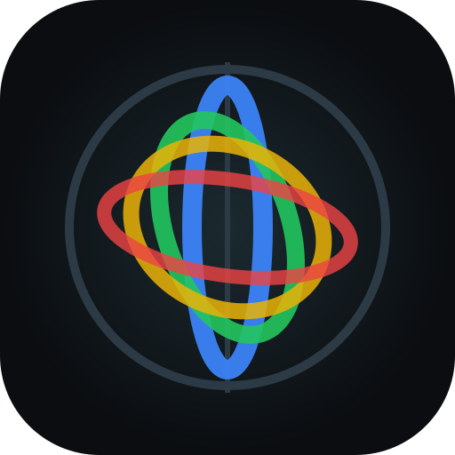

Stereo- og spektralmonitor
Vælg hvad Lydspejl skal lytte til. Når der kommer lyd, spørger den, om du vil analysere.
Venter på lyd. Afspil noget, så spørger jeg.
Vælg Fane eller hele skærmen → fanebladet Chrome-fane → vælg fanen → slå Del også lyd fra fanen til → Del. Fanen kan stadig høres.
Kræver Chrome 141 eller nyere og macOS 14.2 eller nyere. Vælg Hele skærmen og slå Del også systemlyd til. Første gang beder macOS om tilladelse under Systemindstillinger → Anonymitet og sikkerhed.
Goniometer (M/S): mono står lodret, L og R på diagonalerne, fasefejl breder sig vandret. Ellipser viser hvert bånds stereobillede (2σ): smal = mono, rund = bred/ukorreleret, vandret = faseproblem. Korrelation +1 = mono, 0 = ukorreleret, < 0 = fase-/monokompatibilitetsproblem. Bredde S/M i dB: −∞ = mono, 0 dB = lige meget side og mid.
Taster: mellemrum = frys · F = Lissajous i fuld skærm · 1–9 = solo bånd · 0 = alle bånd.
Al analyse sker lokalt i browseren. Lyden sendes ingen steder hen.